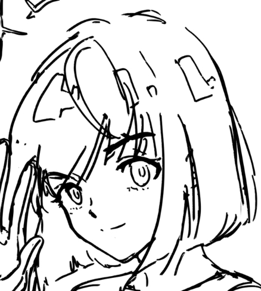

The smoke rises. I was trapped.
This hypocritical curator really wants to take my life.
The flame is around me. But I am losing my strength.
My right hand was hit during the confrontation with the guardians. It no longer obeys my will. That makes my situation even harder.
…
>>>
In the darkness, I felt a massive pain in my right hand. I woke up.
I saw Kylo. He is trying to wrap the bandage around my hand.
“I am sorry.”
>>>
He holds my wrist cautiously with his left hand. His fingers are fixing the bandage on my right hand.
I realized that I was staring blankly at his finger joints.
I vigilantly looked at his eyes, trying to take my hand back and run away.
“Hey, be careful. I just did some emergency treatment. ”
>>>
“I won’t catch you today. They should not try to kill you.”
He looks so serious. And…seems like that he is enduring something…
Blood oozed out of his back, turned his uniform into red.
I understood what happened. He saved me and brought me to this place, and he was also injured.
“Thanks.” I should not speak too much. I should have as little contact with him as possible.
But I continued. “You got hurt.” >>>
“Take a rest, and you can leave.” He avoided my concern and walked away.
Is he fine? Did he see through my identity under this mask?
I stopped thinking and immediately left.
There is something more urgent to do. I need to return and check my hand. What if I lose my hand again? I was agitated.
>>>

 I gradually realize that I want to give myself freedom.
I have not yet decided what to do...
I gradually realize that I want to give myself freedom.
I have not yet decided what to do...